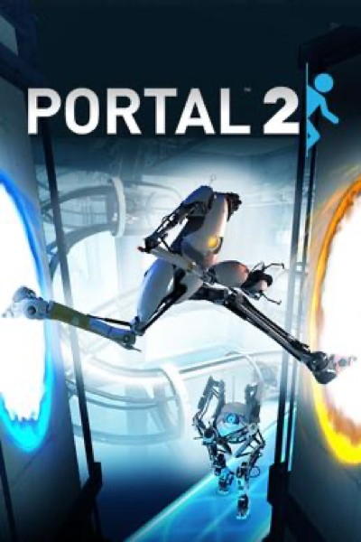

Puzzle · 2011
Portal 2
Gels, co-op and a script good enough to be quoted for a decade.

Cover: Wikipedia: Portal 2
Facts
- Released
- 2011-04-18
- Genre
- Puzzle
- Category
- Puzzle
- Platforms
- PC, PlayStation, Xbox
- Developers
- Valve Corporation
- Publishers
- Valve Corporation
PC requirements
- Minimum
- [object Object]